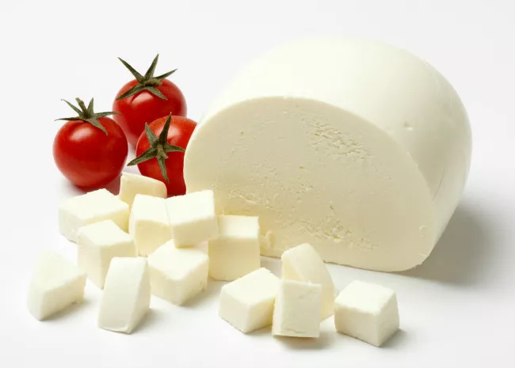

Fresh Mozzarella cheese

Description
This doesn't need a presentation... MOZZARELLA!
Ingredients
- 1 ½ tsp citric acid
- ¼ rennet tablet or ¼ tsp liquid rennet
- 1 cup + ¼ cup chlorine-free water
-
1 gallon of milk (whole milk: pasteurized or unpasteurized, not
ultra-pasteurized)
- 1 teaspoon kosher salt + more to taste
Steps
-
Dissolve 1 ½ teaspoons citric acid with 1 cup water in a large,
non-reactive pot.
-
In a separate bowl, combine the rennet with 1/4 cup water, and set
aside.
-
Use non-super cold milk (let it sit out for a little so it isn't
refrigerator-cold. I don't know why, it just works better) and heat it
in the pot with the citric acid until it reaches 90°F.
-
Remove milk mixture from the heat, add your rennet mixture, and stir it
with the long-handled spatula for 30 seconds. Let sit and don't touch
it!
-
After five minutes, your curd will look like a solid, with lots of
liquid on the side. The solids are the curd, the liquid is the whey, and
there's still lots of whey in your curd at this point. If it hasn't yet
formed into a soft tofu- or custard-like structure, let it sit a bit
longer, covered.
-
Using your sharp knife, cut the curd into squares by cutting long,
parallel slices about an inch wide in one direction and then across,
like a checkerboard. Be sure your knife is long enough to cut all the
way to the bottom of the pot, and try not to nick the pot's surface.
-
At this point you've cut the curds, but you want them to release more of
the whey. To do this, put your pot back on the stove and heat it slowly
over medium heat to about 105° F. As the curds warm, they'll clump
together; you want to encourage this by stirring a bit so that the whey
leaves behind bright white clumps of curd.
-
After the curds reach 105°, remove them from the heat and use a slotted
spoon to transfer the curds (shaking off excess whey) into a
microwaveable glass bowl or a strainer/colander lined with cheesecloth.
You can lift the cheesecloth and squeeze it to coax out a little of the
whey.
-
Once you have your curds in the bowl, you're going to microwave them on
high for a minute. At this point, you should definitely have your gloves
on, because you're going to pull out the bowl from the microwave and
start folding the curds together to make loose balls, squeezing off some
of the excess whey in the process.
-
Pop the lightly worked curds back in the bowl (without the whey) and put
them back in the microwave until they reach 135° F (around 30-45
seconds. Err on the slightly cooler side to make sure you're not
overcooking them). Once they reach 135° F, they'll be perfect for
stretching.
-
To make fresh mozzarella balls, sprinkle salt onto the cheese and feel
free to double up on gloves if your hands are sensitive. Grabbing a
section of the cheese curds (this will be the approximate end size of
your ball), pull the curds out to about half your wingspan, then fold it
back over on itself and repeat. As you do this, the curds should start
to firm up and become harder to stretch. Don't overwork your mozzarella!
As you stretch and fold, consider the ball it will become, and try to
make it into that shape.
-
Once you have your ball, set it gently into the ice water and make
another ball of mozzarella. Reheat the curds in the microwave or hot
bath as needed to get to 135° F.